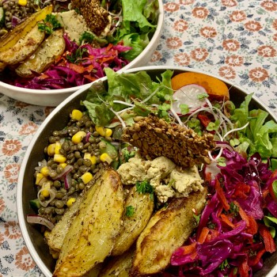

Nos plats et desserts
Chaque jour, notre équipe prépare avec passion une cuisine végétalienne inspirée du potager de La Petite Graine.
Tous nos plats sont faits maison, élaborés à partir de produits frais, locaux, et cueillis avec soin. Nous croyons qu’une alimentation éthique et responsable peut aussi être riche en saveurs, élégante, et généreuse. Goûtez à l’authenticité du végétal, dans un cadre chaleureux et engagé.
Burger vegan au sésame
Falafels rôtis maison
Tartines de Houmous

Assiette veggie colorée
Desserts maison
Sans gluten & sans sucre raffiné
Et plus encore...